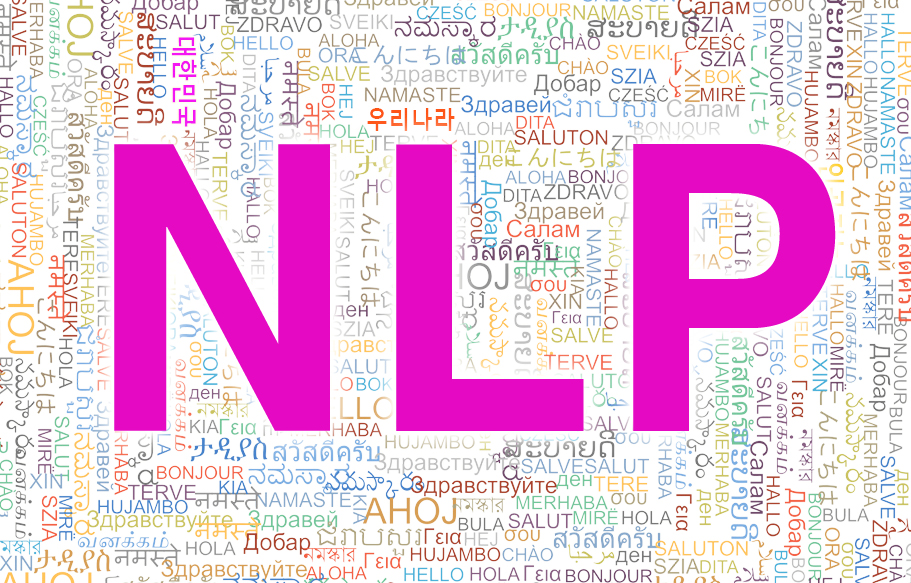
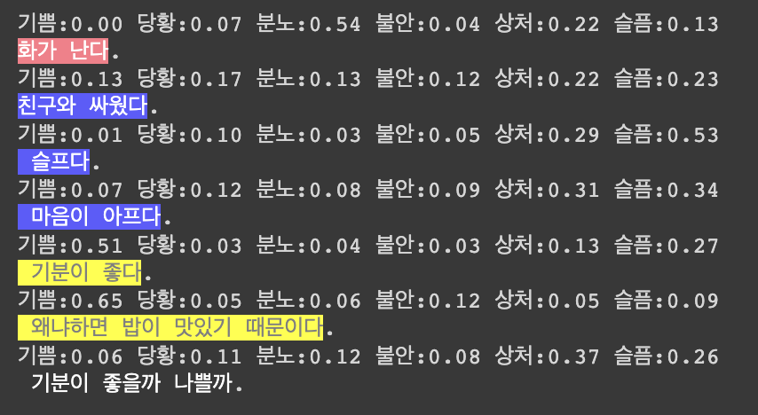

정현우
숭실대 AI융합학부

Natural language processing
자연어 처리(自然語處理) 또는 자연 언어 처리(自然言語處理)는 인간의 언어 현상을 컴퓨터와 같은 기계를 이용해서 묘사할 수 있도록 연구하고 이를 구현하는 인공지능의 주요 분야 중 하나다. 자연 언어 처리는 연구 대상이 언어 이기 때문에 당연하게도 언어 자체를 연구하는 언어학과 언어 현상의 내적 기재를 탐구하는 언어 인지 과학과 연관이 깊다. 구현을 위해 수학적 통계적 도구를 많이 활용하며 특히 기계학습 도구를 많이 사용하는 대표적인 분야이다. 정보검색, QA 시스템, 문서 자동 분류, 신문기사 클러스터링, 대화형 Agent 등 다양한 응용이 이루어지고 있다.
-위키백과-
쉽게 말해서 우리가 흔히 사용하는 언어를 컴퓨터가 알아듣게 하는 것이다.

다음은 내 개인 프로젝트 중 일부이다. 머신에 데이터를 넣어주고 머신이 데이터를 통해서 학습한다. 데이터를 토큰화를 하는 작업도 필요하다. 이를 딥러닝을 통해서 학습을 시키면 문장을 넣었을 때 감정에 대한 수치가 나오게 된다. 개인적으로 이 분야에 흥미가 있어서 2학년 여름방학에 박건우 교수님 연구실에서 인턴을 하였다.